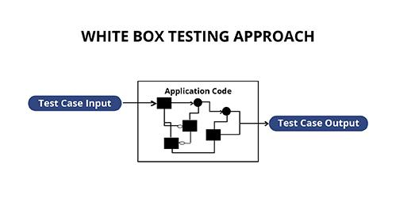

Function, statement and branch coverage · What coverage does and does not prove
→ next slide | ESC overview
1. Black box vs white box, revisited
2. Code coverage: function, statement, branch
3. Two worked examples
4. Why 100% coverage does not mean 100% tested

Both numbers can be high while the product is still broken — and one being high tells you nothing about the other.
Each level is stricter than the one before it. 100% branch coverage implies 100% statement coverage; the reverse is not true.
function calc(a, b) {
let c = 0;
if (a > b) {
c = a;
}
return c;
}Note that calc(1, 1) gives 100% function coverage while never executing the body of the if. This is why the metric you quote matters.
function loop(a) {
let c = 0;
for (let i = 0; i < a; i++) {
c = c + 1;
}
return c;
}Recommendation: black box + white box together give higher test coverage and higher code coverage. Neither replaces the other.
Given test cases:
Questions:
Draw the flow diagram if it helps. Code: onecompiler.com/javascript/3yydc2m52
Submit your statement and branch coverage analysis for the boarding pass code, the additional tests needed for 100% statement coverage, and a diagram if you drew one.
Full brief: Homework 8